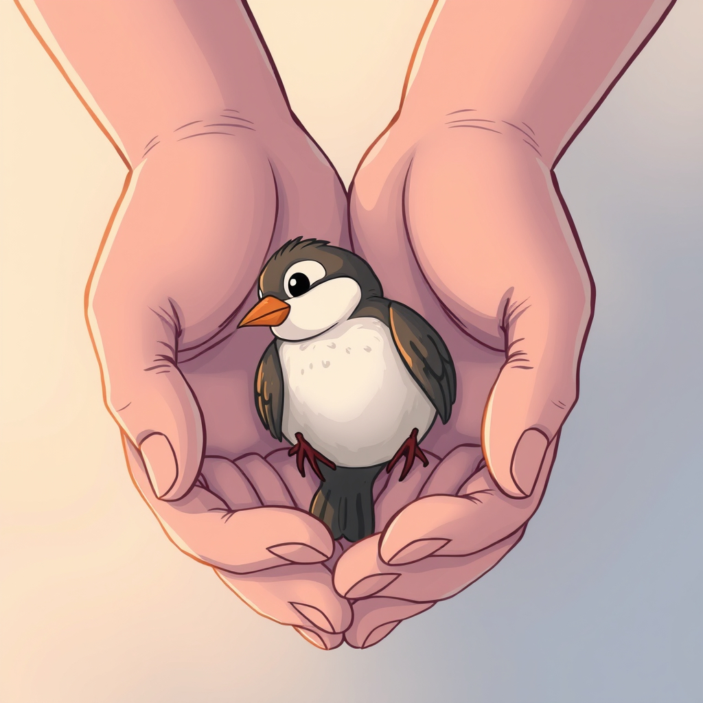

Blog
Evidence based strategies and resources for understanding, managing and improving emotional health.
Emotional wellness is the ability to understand, manage and express your feelings in a way that supports your overall mental health and relationships. Here you'll find evidence based strategies, practical tools and expert insights designed to help you recognize emotions, cope with life's challenges and build resilience.

Active Listening Skills & Exercises: A Complete Guide
Active Listening Skills & Exercises: A Complete Guide Active listening is the practice of fully focusing, understanding, responding to and remembering what anot...
Read more →
Inclusive: Welcoming and Valuing Every Voice
Inclusive: Welcoming and Valuing Every Voice What Inclusivity Really Is Inclusivity is the active practice of creating spaces where every person feels seen, res...
Read more →
Purpose Driven: Living With Meaningful Direction
Purpose Driven: Living With Meaningful Direction What Purpose Driven Living Really Is Purpose driven living is the practice of aligning your actions, choices an...
Read more →
Resilient: Bending Without Breaking
Resilient: Bending Without Breaking What Resilience Really Is Resilience is the steady strength that recovers and grows after difficulty. It is the ability to b...
Read more →
Visualization & Future-Self Exercises
Visualization & FutureSelf Exercises Visualization and future self exercises work by creating a clear mental image of the person you want to become and the life...
Read more →
Collaborative: Building Together for Greater Impact
Collaborative: Building Together for Greater Impact What Collaboration Really Is Collaboration is the willingness to combine strengths, ideas and perspectives w...
Read more →
Influential: Guiding and Uplifting Through Example
Influential: Guiding and Uplifting Through Example What Influence Really Is Influence is the power to shape thoughts, actions or perspectives through your words...
Read more →
Ethical: Choosing Integrity Over Convenience
Ethical: Choosing Integrity Over Convenience What Ethics Really Is Ethics is the practice of aligning your decisions and actions with honesty, fairness and resp...
Read more →Inspiring: Sparking Courage and Creativity in Others
Inspiring: Sparking Courage and Creativity in Others What Inspiration Really Is Inspiration is the ability to ignite hope, courage and new ideas in others throu...
Read more →
Generous: Giving Freely and Wholeheartedly
Generous: Giving Freely and Wholeheartedly What Generosity Really Is Generosity is the willingness to give your time, energy, resources or kindness without expe...
Read more →
Charismatic: Inspiring Connection Through Presence
Charismatic: Inspiring Connection Through Presence What Charisma Really Is Charisma is the magnetic presence that draws people in and makes them feel valued and...
Read more →
Responsible: Acting With Care and Integrity
Responsible: Acting With Care and Integrity What Responsibility Really Is Responsibility is the commitment to act with integrity, reliability and consideration...
Read more →
Healthy: Caring for Body, Mind and Spirit
Healthy: Caring for Body, Mind and Spirit What Health Really Is Health is a state of balance and vitality across your body, mind and spirit. It is the practice...
Read more →Peaceful: Cultivating Inner Calm
Peaceful: Cultivating Inner Calm What Peacefulness Really Is Peacefulness is a state of inner calm that allows you to move through life with steadiness and grac...
Read more →
Optimistic: Choosing Hope and Possibility
Optimistic: Choosing Hope and Possibility What Optimism Really Is Optimism is the mindset of expecting good outcomes and believing in the potential for positive...
Read more →
Grounded: Staying Steady Amid Chaos
Grounded: Staying Steady Amid Chaos What Groundedness Really Is Groundedness is the sense of stability and presence that keeps you centered, even when life feel...
Read more →
Joyful: Embracing Life’s Bright Moments
Joyful: Embracing Life’s Bright Moments What Joyfulness Really Is Joyfulness is the open hearted experience of happiness, delight and appreciation for life’s mo...
Read more →
Resourceful: Creating Solutions From What You Have
Resourceful: Creating Solutions From What You Have What Resourcefulness Really Is Resourcefulness is the ability to find creative and effective solutions using...
Read more →
Mindful: Fully Present in the Moment
Mindful: Fully Present in the Moment What Mindfulness Really Is Mindfulness is the practice of bringing your full attention to the present moment with curiosity...
Read more →
Innovative: Transforming Ideas Into Impact
Innovative: Transforming Ideas Into Impact What Innovation Really Is Innovation is the process of turning fresh ideas into meaningful change. It blends creativi...
Read more →Creative: Bringing New Ideas to Life
Creative: Bringing New Ideas to Life What Creativity Really Is Creativity is the ability to generate fresh ideas, solutions or expressions by combining imaginat...
Read more →
Disciplined: Turning Goals Into Habits
Disciplined: Turning Goals Into Habits What Discipline Really Is Discipline is the commitment to consistent action, even when motivation fades or distractions a...
Read more →
Focused: Directing Energy Where It Matters
Focused: Directing Energy Where It Matters Focus Really Is Focus is the deliberate choice to direct your attention and energy toward what matters most. It's cla...
Read more →
Balanced: Finding Harmony Among Priorities
Balanced: Finding Harmony Among Priorities What Balance Really Is Balance is the intentional distribution of time, energy and attention across the areas of your...
Read more →
Patient: Grace in the Waiting
Patient: Grace in the Waiting What Patience Really Is Patience is calm endurance. It is the ability to wait, adjust, and continue without resentment or haste. P...
Read more →
Supportive: Lifting Others Up
Supportive: Lifting Others Up What Supportiveness Really Is Supportiveness is the practice of offering encouragement, understanding and help in ways that uplift...
Read more →
Cooperative: Creating Harmony Through Teamwork
Cooperative: Creating Harmony Through Teamwork What Cooperation Really Is Cooperation is the willingness to work alongside others toward a shared purpose. It is...
Read more →
Grateful: Finding Value in Every Moment
Grateful: Finding Value in Every Moment What Gratitude Really Is Gratitude is the conscious recognition and appreciation of the good within and around you. It i...
Read more →
Ambitious: Aiming Higher With Purpose
Ambitious: Aiming Higher With Purpose What Ambition Really Is Ambition is the drive to reach beyond your current limits and pursue meaningful goals with energy...
Read more →
Strategic: Planning With Foresight
Strategic: Planning With Foresight What Strategy Really Is Being strategic is the ability to look ahead, evaluate options and choose deliberate actions that ali...
Read more →
Successful: Defining and Reaching Your Vision
Successful: Defining and Reaching Your Vision What Success Really Is Success is achieving goals that align with your values, strengths and purpose. It’s not mea...
Read more →
Trustworthy: Building Confidence Through Consistency
Trustworthy: Building Confidence Through Consistency What Trustworthiness Really Is Trustworthiness is the practice of acting with honesty, reliability and inte...
Read more →
Compassionate: Kindness in Action
Compassionate: Kindness in Action What Compassion Really Is Compassion is the deep awareness of another's experience combined with a sincere desire to ease thei...
Read more →
Self Aware: Seeing Yourself Clearly
Self Aware: Seeing Yourself Clearly What Self Awareness Really Is Self awareness is the clear understanding of your thoughts, emotions, strengths, weaknesses an...
Read more →
Empathetic: Feeling With, Not Just For Others
Empathetic: Feeling With, Not Just For Others What Empathy Really Is Empathy is the ability to sense and understand another person's emotions as if you're stepp...
Read more →
Authentic: Living True to Yourself
Authentic: Living True to Yourself What Authenticity Really Is Authenticity is the practice of aligning your words, actions and choices with your genuine values...
Read more →
Proactive: Moving First With Purpose
Proactive: Moving First With Purpose What Proactivity Really Is Proactivity is the practice of taking initiative before circumstances force your hand. It’s fore...
Read more →
Accountable: Owning Your Actions and Impact
Accountable: Owning Your Actions and Impact What Accountability Really Is Accountability is taking full ownership of your actions, choices and their effects on...
Read more →
Determined: Staying the Course Through Challenges
Determined: Staying the Course Through Challenges What Determination Really Is Determination is the firm commitment to keep moving toward your goal, even when t...
Read more →
Finding Local Culturally Informed Therapy: Your Guide to Healing and Growth
Finding Local Culturally Informed Therapy: Your Guide to Healing and Growth When it comes to mental health, feeling understood is everything. Imagine walking in...
Read more →
Boosting Positive Energy Daily: Boost Energy and Spread Smiles Every Day
Boosting Positive Energy Daily: Boost Energy and Spread Smiles Every Day Every day offers a fresh chance to boost your energy and spread smiles around you. I've...
Read more →
Empowered: Taking Ownership of Your Path
Empowered: Taking Ownership of Your Path What Empowerment Really Is Empowerment is claiming the authority and confidence to shape your own direction. It's the a...
Read more →
Adaptable: Thriving Through Change
Adaptable: Thriving Through Change What Adaptability Really Is Adaptability is the ability to stay steady while adjusting to new conditions. It's flexibility, c...
Read more →
Confident: Standing Tall in Your Strengths
Confident: Standing Tall in Your Strengths What Confidence Really Is Confidence is the steady belief in your ability to learn, grow and handle challenges. It's...
Read more →
Nurturing Emotional Wellness: Emotional Health Tips to Find Your Balance
Nurturing Emotional Wellness: Emotional Health Tips to Find Your Balance Life often feels like a delicate dance between joy and challenge. Sometimes, the rhythm...
Read more →
Relieve Stress with Guided Journaling Benefits
Relieve Stress with Guided Journaling Benefits Stress can feel like a heavy cloud hanging over us, especially when life's demands pile up. I've found that one o...
Read more →
Achieve Personal Growth with These Tips
Achieve Personal Growth with These Tips Embarking on a journey of self improvement can feel like setting sail on an open sea. Sometimes the waters are calm, and...
Read more →
Online Therapy for Anxiety and Depression
Online Therapy for Anxiety and Depression Anxiety can feel like a heavy cloud that follows you everywhere. It's exhausting and isolating. But what if managing a...
Read more →
Return to Work After Maternity Leave: Coping Tips
Return to Work After Maternity Leave: Coping Tips Understanding the Journey Back to Work The day you return to work after having a baby can feel like stepping i...
Read more →
Morning & Evening Routines for Mental Clarity
Morning & Evening Routines for Mental Clarity Structured morning and evening routines help you start and end the day with focus, calm and intention. By aligning...
Read more →
Postpartum Anxiety: Understanding the Worry That Won't Go Away
Postpartum Anxiety: Understanding the Worry That Won't Go Away Recognizing, Managing, and Healing the Hidden Struggle After Birth Introduction It's normal for n...
Read more →
Healing After Birth: The Mind–Body Connection in Postpartum Recovery
Healing After Birth: The Mind–Body Connection in Postpartum Recovery Understanding How Emotional and Physical Healing Work Together Introduction Giving birth is...
Read more →
Bonding and Attachment: Building Connection With Your Baby
Bonding and Attachment: Building Connection With Your Baby Understanding the Science and Emotional Art of Connection After Birth Introduction When a baby is bor...
Read more →
Intrusive Thoughts After Childbirth: When to Seek Help
Intrusive Thoughts After Childbirth: When to Seek Help Understanding Unwanted Thoughts, Anxiety, and the Path to Peace Introduction You're rocking your baby to...
Read more →
Understanding Pregnancy & Postpartum Depression: Evidence-Based Tips, Resources & Tools
Understanding Pregnancy & Postpartum Depression: EvidenceBased Tips, Resources & Tools Introduction Pregnancy and the postpartum period are often talked about i...
Read more →
Postpartum Rage and Emotional Regulation
Postpartum Rage and Emotional Regulation Understanding Anger After Birth and How to Heal Through It Introduction No one talks about how angry new parenthood can...
Read more →
Fourth Trimester: First 12 Weeks After Birth Recovery
Fourth Trimester: First 12 Weeks After Birth Recovery Finding Balance, Healing, and Support in Early Parenthood Introduction The world celebrates birth, but wha...
Read more →
Partners in Postpartum Mental Health: Support and Recovery
Partners in Postpartum Mental Health: Support and Recovery How Connection, Support, and Shared Understanding Strengthen Recovery After Birth Introduction The we...
Read more →
How to Set Goals That Actually Stick
How to Set Goals That Actually Stick To set goals that stick, make them specific, measurable, achievable, relevant and time bound (SMART), connect them to perso...
Read more →
Nature-Based Mindfulness Practices
NatureBased Mindfulness Practices Nature based mindfulness practices use outdoor environments to deepen awareness, reduce stress and restore mental clarity. By...
Read more →
Relationship Red Flags & Green Flags
Relationship Red Flags & Green Flags Relationship red flags are warning signs of unhealthy patterns, such as lack of trust, disrespect or controlling behavior....
Read more →
Overcoming Procrastination with CBT-Based Tools
Overcoming Procrastination with CBTBased Tools Cognitive Behavioral Therapy (CBT) can help you overcome procrastination by identifying unhelpful thoughts, chall...
Read more →
Building Emotional Safety with Loved Ones
Building Emotional Safety with Loved Ones You build emotional safety with loved ones by fostering trust, showing empathy, validating feelings and responding wit...
Read more →
The “2-Minute Rule” & Other Micro-Habit Techniques
The “2Minute Rule” & Other MicroHabit Techniques The "2 Minute Rule" and other micro habit techniques make starting new habits easier by breaking them into acti...
Read more →
Breaking Down Big Goals into Daily Actions
Breaking Down Big Goals into Daily Actions To break down big goals into daily actions, start by defining the end result, reverse engineer the steps needed, orga...
Read more →
Overcoming Mental Blocks & Fear of Failure When Pursuing Big Goals
Overcoming Mental Blocks & Fear of Failure When Pursuing Big Goals To overcome mental blocks and fear of failure, you must identify limiting thoughts, reframe y...
Read more →
Sensory Self-Care: Using Senses to Relax the Mind
Sensory SelfCare: Using Senses to Relax the Mind Sensory self care is the practice of engaging your five senses (sight, sound, smell, taste and touch) to reduce...
Read more →
Improving Social Confidence
Improving Social Confidence You can improve social confidence by developing self awareness, practicing social skills in low pressure settings, challenging negat...
Read more →
Navigating Conflict in Romantic Relationships
Navigating Conflict in Romantic Relationships You can navigate conflict in romantic relationships by approaching disagreements with empathy, active listening an...
Read more →
Nutrition & Mood: The Gut-Brain Connection
Nutrition & Mood: The GutBrain Connection Your gut and brain are connected through a network called the gut brain axis, meaning what you eat can directly influe...
Read more →
Self-Care Routines for Different Personality Types: Finding What Works for You
SelfCare Routines for Different Personality Types: Finding What Works for You Self care routines are most effective when they match your personality type. Tailo...
Read more →
Creating a Personal Self-Care Plan
Creating a Personal SelfCare Plan A personal self care plan is a customized approach to maintaining your physical, emotional and mental well being. It identifie...
Read more →
The Role of Sleep in Mental Wellness: Why Rest is the Foundation of a Healthy Mind
The Role of Sleep in Mental Wellness: Why Rest is the Foundation of a Healthy Mind Quality sleep is essential for mental wellness because it restores brain func...
Read more →
How to Say No & Maintain Respect
How to Say No & Maintain Respect You can say no and maintain respect by being clear, honest and considerate, using language that honors your boundaries while sh...
Read more →
How to Identify & Name Your Emotions
How to Identify & Name Your Emotions You can identify and name your emotions by tuning into your body's physical cues, observing your thoughts and behaviors and...
Read more →Coping Skills for Stress, Anxiety, and Anger
Coping Skills for Stress, Anxiety, and Anger Coping skills for stress, anxiety and anger include grounding techniques, controlled breathing, physical activity,...
Read more →
Understanding Triggers & Building Resilience
Understanding Triggers & Building Resilience Triggers are events, situations or sensory inputs that provoke strong emotional reactions, often linked to past exp...
Read more →
Time Blocking & Energy Management Strategies
Time Blocking & Energy Management Strategies Time blocking organizes your day into dedicated chunks for specific tasks, while energy management ensures you sche...
Read more →
Guided Breathing & Grounding Techniques for Calm & Focus
Guided Breathing & Grounding Techniques for Calm & Focus Guided breathing and grounding techniques help calm the nervous system, reduce anxiety and bring focus...
Read more →
How to Set Boundaries Without Guilt
How to Set Boundaries Without Guilt You can set boundaries without guilt by first recognizing your needs, communicating them clearly and understanding that heal...
Read more →
7-Day Habit Kickstart Challenge
7Day Habit Kickstart Challenge Purpose: To Help build one new positive habit in just one week. Day 1: Choose Your Habit Pick one habit you want to build. Write...
Read more →
The Science of Habit Formation
The Science of Habit Formation Habit formation is the process by which repeated behaviors become automatic through consistent cues, routines and rewards. Unders...
Read more →
Journaling Prompts for Self Discovery – Explore Emotions & Grow
Journaling Prompts for Self Discovery – Explore Emotions & Grow Journaling for self discovery uses guided prompts to help you explore your thoughts, emotions, v...
Read more →
Emotional Regulation Exercises for Daily Life (Guide + Printable Chart)
Emotional Regulation Exercises for Daily Life (Guide + Printable Chart) Daily emotional regulation exercises like controlled breathing, mindfulness, body scanni...
Read more →
Emotional First Aid: Quick Steps for Overwhelm
Emotional First Aid: Quick Steps for Overwhelm Emotional first aid for overwhelm involves immediate, simple actions that calm the mind and body, restore a sense...
Read more →